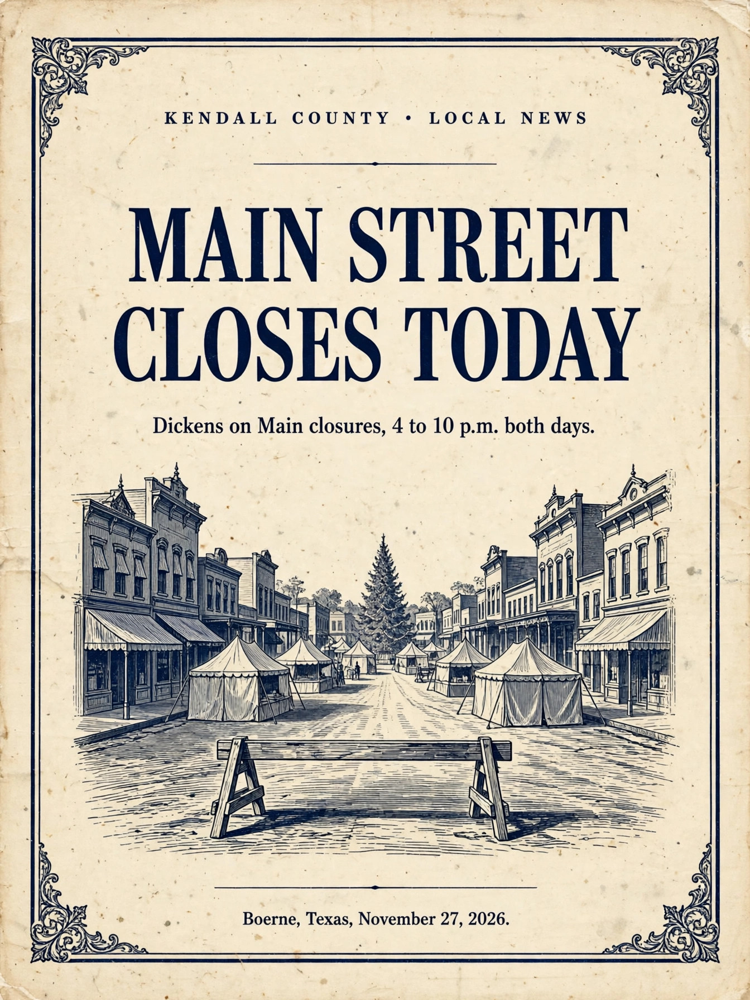

Community | November 27, 2026
The City of Boerne will close Main Street between Blanco Road and River Road, and roads around Main Plaza, from 4 p.m. to 10 p.m. on Friday, November 27, and Saturday, November 28, for Dickens on Main.
Community | November 26, 2026
Dickens on Main runs Friday and Saturday on the Hill Country Mile, with Breakfast with Santa, the Cibolo Farmers Market at Herff Farm, the Old West Christmas Light Fest and the Jones Christmas Ranch lights among 20 events listed for November 27-29.
Sports | November 26, 2026
The Boerne High boys basketball team beat Kerrville Tivy 78-41 and Northside Marshall 97-39 to reach 3-1 on the season.
Sports | November 25, 2026
Boerne (12-0) plays Liberty Hill Legacy Ranch at 1 p.m.
Sports | November 25, 2026
Boerne Champion went 5-0 to win the Marble Falls boys basketball tournament, and one of the wins was head coach Chris Adamek's 500th career victory.
Local News | November 24, 2026
The Kendall County Courthouse and Boerne City Hall, including Boerne Utilities, will be closed Thursday, November 26, and Friday, November 27, for Thanksgiving, and WM trash and recycling collection in Boerne will be delayed by one day that week.